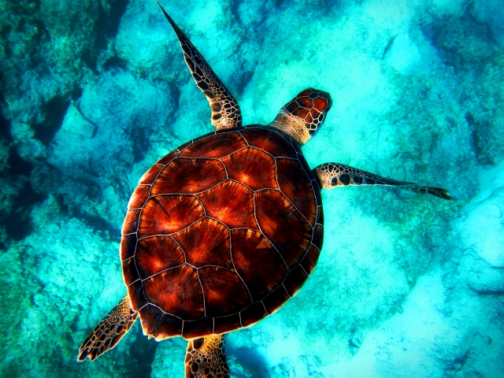
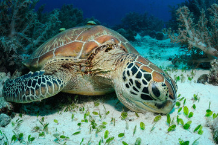
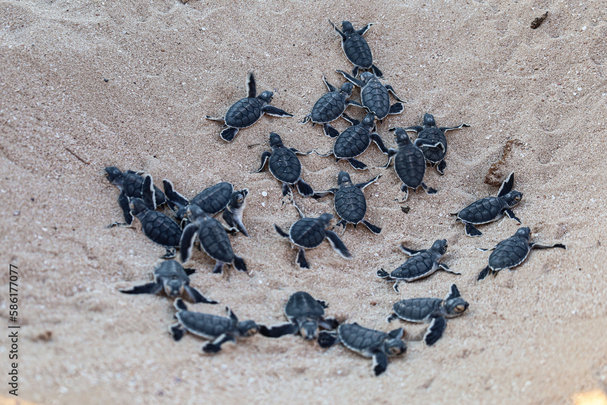

Sea Turtles in Texas

Five of the seven known sea turtle species can be found along the Texas coast.
They include the Green Sea Turtle, the Loggerhead Sea Turtle, the Leatherback Sea Turtle, the Kemp's Ridley Sea Turtle and the Hawksbill Sea Turtle.

Did you know that turtles do not have teeth? Their beak structures helps each species with their diet.
They can travel thousands of miles around the ocean.

Nesting temperatures determine the sex of the turtle. Warmer temperatures mean more females while cooler temperatures mean more males.